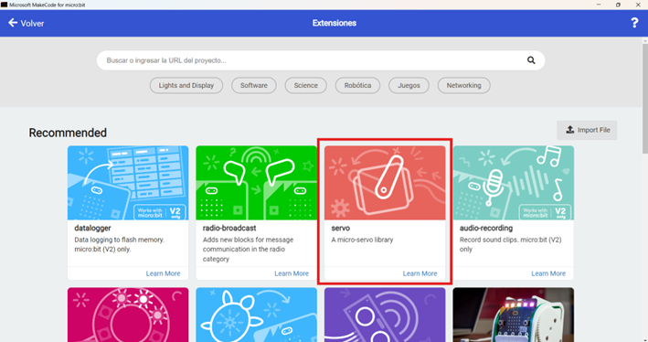
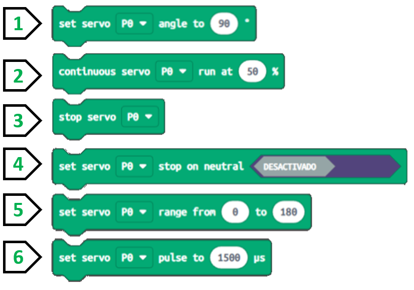
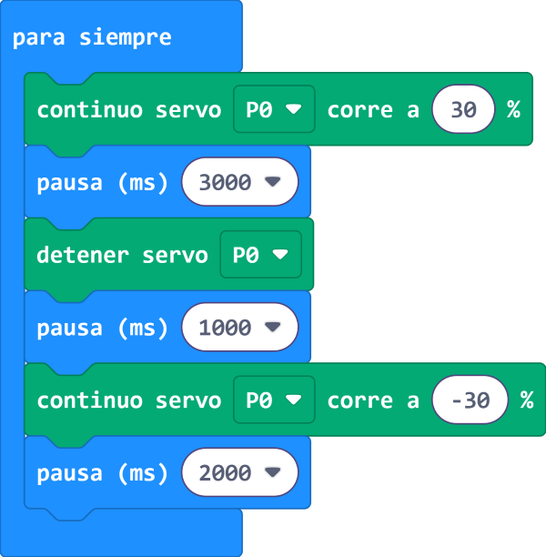
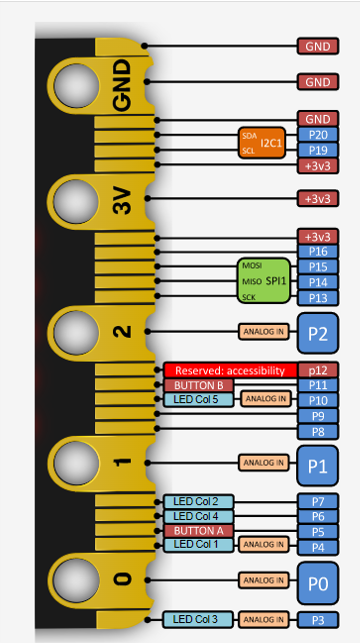

En las siguientes pestañas aprenderás a cómo programarlo:
Agregar extensión
Makecode, el entorno de programación de micro:bit tiene extensiones que amplían las posibilidades de conectar y programar distintos aparatos especiales a nuestra micro:bit
Abre un nuevo proyecto en micro:bit y busca en las categorías la palabra extensiones. Se desplegarán muchas opciones, de entre todas ellas elige "servo" y en la siguiente imagen aparece la opción:

La extensión que nos interesa es la que está rodeada en rojo: servomotor. Sigue los siguientes pasos:
Ahora, verás en la zona de los bloques del entorno de programación de Makecode una nueva categoría de bloques llamada Servos.
Bloques de programación
Para programar nuestro servomotor seguiremos los siguientes pasos:
1. Abrir un nuevo proyecto. Nombrarlo y seleccionar idioma.
2. Hacer clic en extensiones y seleccionar la de servo.
3. Tendremos acceso a los bloques de esta categoría:
1. Set servo angle: Con este bloque podremos mover el ángulo a un valor deseado.
2. Continuous servo: Podremos controlar la velocidad de rotación continua siempre que el servo cuente con esta característica.
3. Stop servo: Detiene el motor servo e impide que éste siga girando.
4. Set servo stop on neutral: Nos ayudará a limitar la rotación del servo cuando éste llegue a 90 grados.
5. Set servo range: Este bloque nos permite indicar el rango de rotación del servo, es decir: del valor mínimo al máximo expresado en grados.
6. Set servo pulse to: Nos permitirá usar distintos tipos de motores y con anchos de pulsos diferentes.
Programa 1
Seguro que ya sabías que con Makecode contamos con un simulador, ¿verdad?, pues..., muy bien, es el momento de que pruebes esos bloques y veas cómo el simulador realiza todo lo que vayas programando. De esta forma, realiza un programa para que cuando se presione el botón A gire en un sentido con una velocidad de 30% el servomotor y cuando se presione el botón B gire en sentido contrario con la misma velocidad. Por último, si se presionan simultáneamente los botones A y B el servomotor se detendrá. Por cierto, coloca si no los tiene, alguno de los accesorios que trae el servomotor que parecen aspas de molino. En la siguiente imagen se muestra el programa para desarrollarlo en el makecode:
.png)
Programa 2
Desarrolla el siguiente programa que se encuentra en la imagen inferior para que por siempre gire el servomoto en un sentido, espere unos 3 segundos, luego se detenga por 1 segundo y de empiece a girar en sentido opuesto por dos segundos.

Lectura facilitada
Los servomotores son dispositivos
muy utilizados en robótica.
Los servomotores se usan como:
-Humanoides.
-Brazos.
-Control de puertas.
-Y muchos más.
El servomotor se controla.
Un servomotor se coloca en cualquier posición.
Se mueve en semicírculo.
La posición va desde 0 a 180 grados.
Conecta el servomotor

El servomotor tiene tres cables:
- Dos cables de alimentación.
- Un cable para una señal de control.
Usa cables cocodrilo
para conectar el servo a la micro:bit.
Los pines sirven para crear circuitos
y conectar elementos externos.
tor.Los elementos externos pueden ser
- Timbres.
- Motores.
- Y muchos más.
Los pines están en la parte inferior de la micro:bit.
Son 25 tiras doradas.
Necesitas los pines para conectar el
el servomotor a la placa micro:bit.
Tú usas más los pines de tira ancha.
Los primeros tres pines son 0, 1 y 2.
Tú usas los pines para muchas cosas diferentes.
Los pines se usan para:
- Entradas.
- Salidas.
- Botones táctiles.
- Y muchas cosas más.
El pin 3V sirve de salida o entrada
de 3 voltios de potencia.
El pin Ground sirve de conexión a tierra
para cerrar un circuito.
Tú conectas desde Pin0, 3V y GND y controlas.
Para controlar envía la señal en Pin0.
El color del cable es:
- Naranja es de señal.
- Rojo es 3 voltios.
- Marrón es de tierra
y se llama GND.
GND son las siglas de Ground.
Programas el servomotor
Sigue estos pasos
para programar el servomotor:
1. Abrir un nuevo proyecto.
Nombrar el proyecto y seleccionar idioma.
2. Hacer clic en extensiones
y seleccionar la extensión de servo.
3. Acceder a los bloques
de esta categoría:
1. Set servo angle:
Mueves el ángulo a un valor deseado.
2. Continuous servo:
Controlas la velocidad
de rotación continua.
3. Stop servo:
Detienes el motor servo
e impide que el motor gire.
4. Set servo stop on neutral:
Limitas la rotación del servo
cuando el servo llegue a 90 grados.
5. Set servo range:
Indicas el rango de rotación del servo.
El rango de rotación es
el rango del valor mínimo al máximo
expresado en grados.
6. Set servo pulse to:
Usas distintos tipos de motores
y con anchos de pulsos diferentes.
Vídeo
El vídeo explica la conexión
de un servomotor a la micro:bit
También explica la programación
de un servomotor.